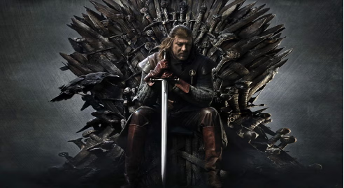
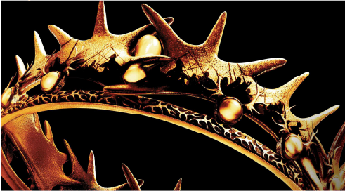
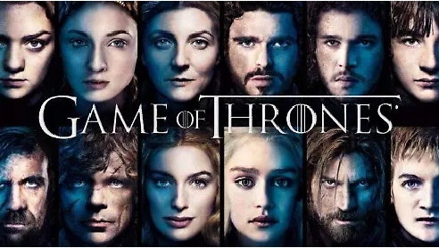
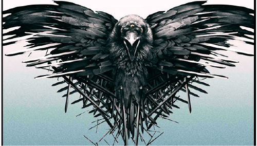
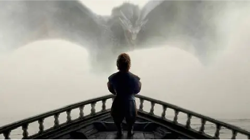
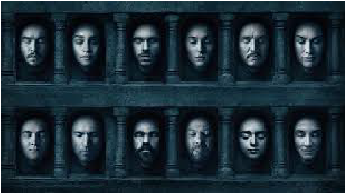
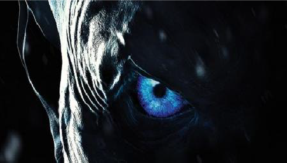
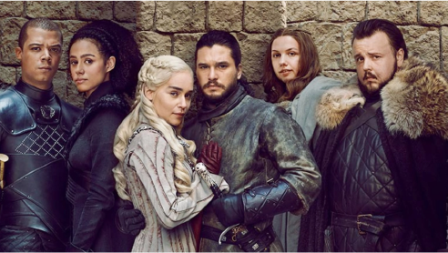

GAME OF THRONES
Temporadas
Temporada 1: El inicio del juego (2011)
La familia Stark se convierte en el centro de las intrigas cuando Ned Stark viaja a Desembarco del Rey. Mientras tanto, Daenerys Targaryen comienza su viaje en el exilio. Una frase se repite como advertencia: “Se acerca el invierno”.
Ver trailerURL: trailer oficial primera temporada
Temporada 2: La guerra de los cinco reyes (2012)
Tras la muerte del rey Robert, varios líderes reclaman el Trono de Hierro. Tyrion se convierte en Mano del Rey y defiende Desembarco en la Batalla del Aguasnegras. En el norte, los Caminantes Blancos comienzan a despertar.
Ver trailerURL: trailer oficial segunda temporada
Temporada 3: La Boda Roja (2013)
El honor y las alianzas traen consecuencias sangrietas. Robb Stark sufre una de las traiciones más impactantes de la televisión en la Boda Roja. Arya sigue su camino de venganza y Danaerys gana poder liberando esclavos.
Ver trailerURL: trailer oficial segunda temporada
Temporada 4: Venganza y Justicia (2014)
La Boda Púrpura sorprende a todos con la muerte de Joofrey. Tyrion es acusado injustamente y sufre un drámatico juicio. En el norte, la Guardia de la Noche defiende en el Muro contra los salvajes en una de las batallas más épicas.
Ver trailerURL: trailer oficial segunda temporada
Temporada 5: Caídas y Ascensos (2015)
Cersei vive su caída mas humillante con el "paseo de la verguenza". En el muro Jon Snow se convierte en Lord Comandante, mientras Daenerys enfrenta rebeliones en Meereen.
Ver trailerURL: trailer oficial segunda temporada
Temporada 6: El invierno se acerca (2016)
El regreso de Jon Snow cambia el rumbo del norte. La Batalla de los bastardos enfrenta a Jon con Ramsay Bolton. Arya termina su entrenamiento como asesina y Cersei destruye el Gran Septo, coronándose como reina.
Ver trailerURL: trailer oficial segunda temporada
Temporada 7: El Invierno Ha LLegado (2017)
Daenerys llega a Poniente con sus dragones y une fuerzas con Jon Snow contra el Rey de la Noche. Sin embargo Cersei trama mantener el poder. El Muro cae gracias al dragon convertido en espectro.
Ver trailerURL: trailer oficial segunda temporada
Temporada 8: Venganza y Justicia (2018)
La última temporada resuelve la lucha contra los Caminantes Blancos en Invernalia y la guerra final en Desembarco del Rey. Daenerys desata la destrucción, y el destino del Trono de Hierro sorprende a todos.
Ver trailerURL: trailer oficial segunda temporada

Con sus 8 temporadas y 73 episodios, Game of Thrones revolucionó la narrativa televisiva con
personajes complejos, giros inesperados y batallas espectaculares.
Un legado que sigue vivo entre los fans y que abrió camino a nuevas historias en el universo
de Poniente.
Si te gustó esta guía, no te pierdas nuestro contenido sobre
House of the Dragon y el futuro de los Siete Reinos.
URL: trailer oficial House of the Dragon